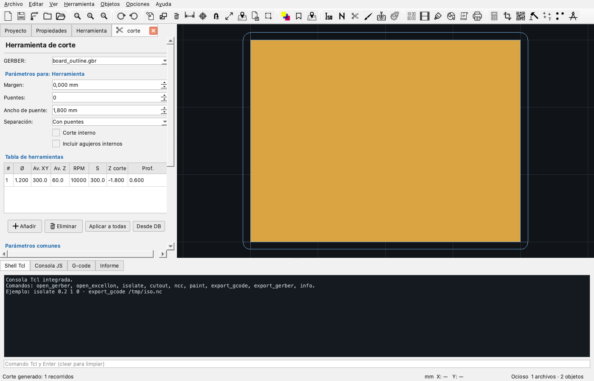

Corte de contorno
Separación de la placa, puentes y multipasada
El corte de contorno separa la placa terminada del material sobrante. FlatCAM calcula el recorrido alrededor del borde con la compensación del diámetro de la fresa.

Cómo funciona
El objeto de origen suele ser la capa Edge_Cuts o el contorno de la placa. FlatCAM une el contorno, aplica un buffer de margen ± Ø/2 y extrae los recorridos exteriores. El margen decide si el corte queda por fuera o por dentro del borde:
- Margen positivo: la fresa pasa por fuera del contorno; la placa queda con la medida nominal.
- Margen negativo: la fresa pasa por dentro; la placa queda más chica.
- Margen 0: la fresa se centra en el contorno; la placa queda Ø/2 más chica.
Parámetros
| Parámetro | Qué hace | Valores típicos |
|---|---|---|
| Margen | Separación entre el contorno y el recorrido. | 0,2–1,0 mm; 0,5 mm habitual. |
| Separación | Tipo de corte: con puentes o corte completo. | Con puentes para placas grandes. |
| Puentes | Cantidad de tramos sin cortar que sostienen la placa. | 2–6; 4 es común. |
| Lados de puente | Limita los puentes a todos los lados, arriba/abajo o izquierda/derecha. | Todos para una placa rectangular. |
| Puentes manuales | Posiciones como porcentaje del perímetro (ej. 10, 30, 70). Si se completa, reemplaza cantidad y lados. | Vacío para distribución automática. |
| Ancho de puente | Longitud de cada tramo sin cortar. | 1–3 mm. |
| Incluir agujeros internos | Corta también los contornos internos. | Sólo si hay ventanas o huecos. |
| Profundidad | Z final del corte. | Placa 1,6 mm → −1,8 a −2,0 mm. |
| Profundidad por pasada | Baja en escalones. | 0,4–0,6 mm por pasada. |
Tabla de herramientas
Igual que en aislamiento: Ø, avances, RPM, Z corte y profundidad por pasada. Para corte se suele usar una fresa de 1–2 mm y varias pasadas.
Puentes vs corte completo
- Con puentes: la placa queda sujeta y no se mueve; después se separa con cuidado. Los tramos se reparten uniformemente o se limitan a los lados elegidos.
- Puentes manuales: escribí porcentajes del perímetro separados por comas. Por ejemplo
0, 25, 50, 75deja cuatro puentes en esas posiciones;10, 90deja dos cerca del inicio y del final del recorrido. - Corte completo: recorre todo el contorno. La placa puede moverse al final; usá cinta de doble faz o un tablero sacrificial.
Multipasada
Para placas de 1,6 mm no conviene bajar 1,8 mm de una vez. Configurá Prof. en 0,4–0,6 mm: el programa repite el recorrido en escalones hasta la profundidad final. Esto reduce la rotura de fresas y mejora el acabado.
Generar
- Elegí el GERBER de contorno.
- Definí margen (0,5 mm es un buen inicio) y fresa.
- Elegí puentes y ancho, o corte completo.
- Configurá Z corte y profundidad por pasada.
- Previsualizá y generá el CNCJob.
- Simulá y verificá que el recorrido no corte pistas cercanas al borde.
Valores recomendados
| Fresa | Margen | Z corte | Prof./pasada | Avance XY |
|---|---|---|---|---|
| 1,0 mm | 0,3–0,5 | −1,8 | 0,4 | 150–250 |
| 1,5 mm | 0,4–0,6 | −1,8 | 0,5 | 200–300 |
| 2,0 mm | 0,5–1,0 | −1,9 | 0,6 | 250–400 |
Si la placa tiene componentes montados o pistas muy cerca del borde, aumentá el margen y revisá el recorrido en el visor. Un corte demasiado interno puede inutilizar la placa.
Problemas frecuentes
| Síntoma | Causa | Solución |
|---|---|---|
| La placa queda chica | Margen 0 o negativo | Usá margen positivo ≈ Ø/2. |
| El corte no atraviesa | Z insuficiente o placa gruesa | Bajá Z o agregá pasadas. |
| La placa se mueve | Corte completo sin sujeción | Usá puentes o cinta. |
| Fresa rota | Pasada muy profunda | Reducí Prof. y avance Z. |